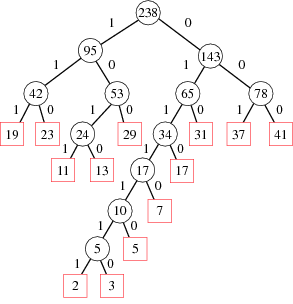

El análisis de frecuencias está basado en las letras de un texto teniendo distintas frecuencias entre ellas, es decir, cada una aparece un número de veces determinado. Cada lenguaje cuenta con una distribución característica de las letras.
La codificación Huffman usa un método específico para elegir la representación de cada símbolo, que da lugar a un código prefijo que representa los caracteres más comunes con las cadenas de bits más cortas. Para ello, primero se crea un árbol binario en el que se etiquetan los nodos con los caracteres junto con sus frecuencias, donde cabe destacar la distinción entre nodos hoja, que vertebran el árbol y nodos hijo que aparecen cuando, de forma consecutiva al primer paso, se une cada pareja de nodos que menos frecuencia sumen, siendo el nuevo nodo hijo intermedio etiquetado con dicha suma. En otras palabras, los primeros nodos se corresponden con las uniones del árbol en general y los segundos se identifican como pequeñas ramas que desembocan en un peso. Finalmente, se procede a realizar la misma acción hasta que no queden nodos hijos por unir a ningún nodo superior: se ha formado el árbol binario.
El árbol ya se ha construido siguiendo el algoritmo y dando lugar a un peso máximo que es el que indicará cuánto pesa nuestro texto ya comprimido. Una vez ya esté formado nuestro árbol solo debemos asignar, por convenio, el bit “0” a las ramas de la izquierda y el “1” a las de la derecha.
En este último paso del proceso, lo que haremos es seguir el árbol que hemos generado y a partir de él obtener la codificación de cada letra, es decir, su cadena de bits correspondiente. Por último, juntaremos dichos códigos en orden para formar el párrafo deseado.
Este tipo de compresión, al usarse en un modo práctico, debe saberse el idioma al que pertenece, puesto que sino no puede realizarse. Los compresores más comunes como el famoso .zip, incorporan esta compresión acompañada de un herramienta para saber de que idioma se trata. De esta forma es capaz de comprimir mucho mejor un texto. Para completar esta teoría muy básica, os enlazo al documento de word que realizamos para el concurso de aplicamates de la UPM: Huffman Word